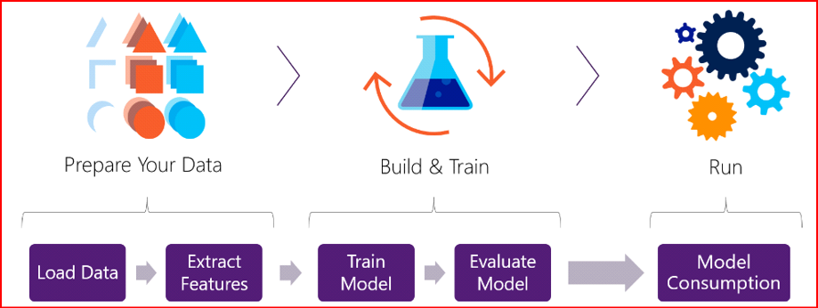
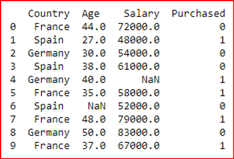
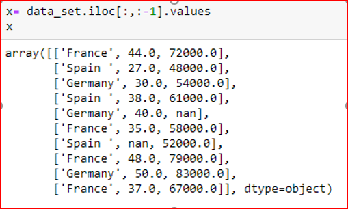
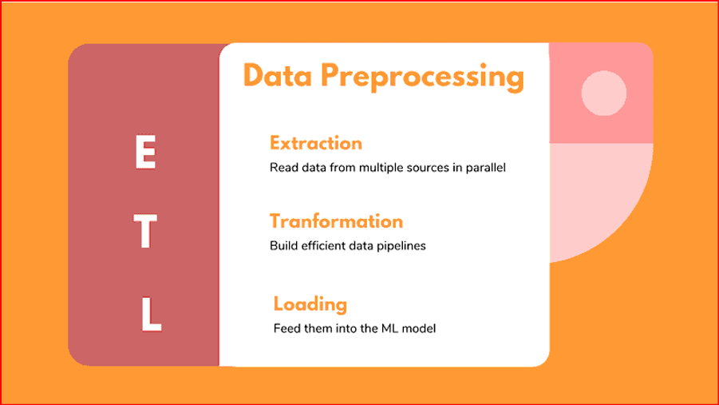
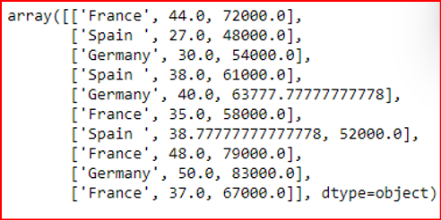

—Software engineering—
Data Pre-Processing
In any Machine Learning process, Data Preprocessing is that step in which the data gets transformed, or Encoded, to bring it to such a state that now the machine can easily parse it. In other words, the features of the data can now be easily interpreted by the algorithm.
Data preprocessing is a process of preparing the raw data and making it suitable for a machine learning model. It is the first and crucial step while creating a machine learning model.
When creating a machine learning project, it is not always a case that we come across the clean and formatted data. And while doing any operation with data, it is mandatory to clean it and put in a formatted way. So for this, we use data preprocessing task.
Why is Data preprocessing important?
Preprocessing of data is mainly to check the data quality. The quality can be checked by the following:
Accuracy
To check whether the data entered is correct or not.
Completeness:
To check whether the data is available or not recorded.
Consistency:
To check whether the same data is kept in all the places that do or do not match.
Timeliness:
The data should be updated correctly.
Believability:
The data should be trustable.
Interpretability:
The understandability of the data.
Major Tasks in Data Preprocessing:
- Data cleaning
- Data integration
- Data reduction
- Data transformation
Data cleaning:
Data cleaning is the process to remove incorrect data, incomplete data and inaccurate data from the datasets, and it also replaces the missing values. There are some techniques in data cleaning
Handling missing values:
Standard values like “Not Available” or “NA” can be used to replace the missing values.
Missing values can also be filled manually but it is not recommended when that dataset is big.
The attribute’s mean value can be used to replace the missing value when the data is normally distributed
wherein in the case of non-normal distribution median value of the attribute can be used.
While using regression or decision tree algorithms the missing value can be replaced by the most probable
value.
Noisy
Noisy generally means random error or containing unnecessary data points. Here are some of the methods to handle noisy data.
Data integration:
The process of combining multiple sources into a single dataset. The Data integration process is one of the main components in data management. There are some problems to be considered during data integration.
Data reduction:
This process helps in the reduction of the volume of the data which makes the analysis easier yet produces the same or almost the same result. This reduction also helps to reduce storage space. There are some of the techniques in data reduction are Dimensionality reduction, Numerosity reduction, Data compression.
Dimensionality reduction:
This process is necessary for real-world applications as the data size is big. In this process, the reduction of random variables or attributes is done so that the dimensionality of the data set can be reduced. Combining and merging the attributes of the data without losing its original characteristics. This also helps in the reduction of storage space and computation time is reduced. When the data is highly dimensional the problem called “Curse of Dimensionality” occurs.
Numerosity Reduction:
In this method, the representation of the data is made smaller by reducing the volume. There will not be any loss of data in this reduction.
Data compression:
The compressed form of data is called data compression. This compression can be lossless or lossy. When there is no loss of information during compression it is called lossless compression. Whereas lossy compression reduces information but it removes only the unnecessary information.
Transformation
The change made in the format or the structure of the data is called data transformation. This step can be simple or complex based on the requirements. There are some methods in data transformation.
Binning:
This method is to smooth or handle noisy data. First, the data is sorted then and then the sorted values are separated and stored in the form of bins. There are three methods for smoothing data in the bin. Smoothing by bin mean method: In this method, the values in the bin are replaced by the mean value of the bin; Smoothing by bin median: In this method, the values in the bin are replaced by the median value; Smoothing by bin boundary: In this method, the using minimum and maximum values of the bin values are taken and the values are replaced by the closest boundary value.
Regression:
This is used to smooth the data and will help to handle data when unnecessary data is present. For the analysis, purpose regression helps to decide the variable which is suitable for our analysis.
Clustering:
This is used for finding the outliers and also in grouping the data. Clustering is generally used in unsupervised learning.
Schema integration:
Integrates metadata(a set of data that describes other data) from different sources.
Entity identification problem: Identifying entities from multiple databases. For example, the system or the use should know student _id of one database and student_name of another database belongs to the same entity.
Detecting and resolving data value concepts: The data taken from different databases while merging may differ. Like the attribute values from one database may differ from another database. For example, the date format may differ like “MM/DD/YYYY” or “DD/MM/YYYY”.
Smoothing
With the help of algorithms, we can remove noise from the dataset and helps in knowing the important features of the dataset. By smoothing we can find even a simple change that helps in prediction.
Aggregation:
In this method, the data is stored and presented in the form of a summary. The data set which is from multiple sources is integrated into with data analysis description. This is an important step since the accuracy of the data depends on the quantity and quality of the data. When the quality and the quantity of the data are good the results are more relevant.
Discretization:
The continuous data here is split into intervals. Discretization reduces the data size. For example, rather than specifying the class time, we can set an interval like (3 pm-5 pm, 6 pm-8 pm).
Normalization:
It is the method of scaling the data so that it can be represented in a smaller range. Example ranging from -1.0 to 1.0. This article was published as a part of the Data Science Blogathon
Why is Data preprocessing important?
Accuracy
To check whether the data entered is correct or not.
Completeness:
To check whether the data is available or not recorded.
Consistency:
To check whether the same data is kept in all the places that do or do not match.
Timeliness:
The data should be updated correctly.
Believability:
The data should be trustable.
Interpretability:
The understandability of the data.
Data preprocessing steps in machine learning
Import libraries and the dataset:
import pandas as pd
import numpy as np
dataset = pd.read_csv('Datasets.csv')
print (data_set)

Extracting independent variable:
 
Filling the dataset with the mean value of the attribute:
from sklearn.preprocessing import Imputer
imputer= Imputer(missing_values ='NaN', strategy='mean', axis = 0)
imputerimputer= imputer.fit(x[:, 1:3])
x[:, 1:3]= imputer.transform(x[:, 1:3])
x
